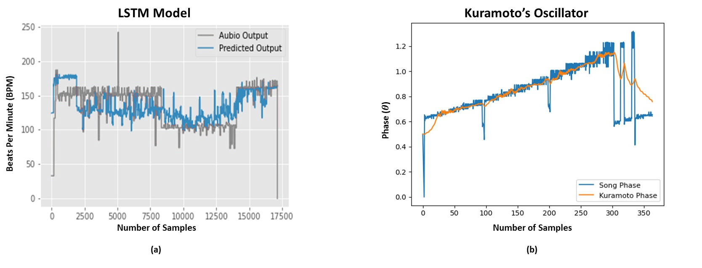

A Framework for Human-Robot Musical Synchronization
Sutirtha Chakraborty
Maynooth University
üéº Introduction
The integration of robotic systems into musical ensembles is a frontier that pushes the boundaries of robotics, artificial intelligence, and human-computer interaction. It can be represented as a connected graph where each of the musicians is connected to each other as shown in the figure below.
Interconnected network among musicians during a musical ensemble depicts each individual musician to be connected to others to synchronize their performances with the leader.
Building upon the historical evolution of automated musical systems explored in Chapter 1 and the detailed analysis of synchronization mechanisms in Chapter 2, this chapter introduces the Cyborg Philharmonic framework. The framework aims to address the intricate challenges of achieving expressive and synchronized human-robot performances in real-time ensemble settings.
üéØ Framework Goals
Unlike static or purely algorithmic approaches, the Cyborg Philharmonic integrates dynamic learning models with classical synchronization techniques to create a responsive, adaptive, and expressive robotic musician. The goal is not only technical synchronization but also the emulation of human-like musicality—capturing the subtleties of timing, phrasing, and expression that are inherent in human performances.
üìö Chapter Structure
üèóÔ∏è Framework Overview
Key components including Mapping and Modeling Modules for data acquisition, synchronization, and predictive modeling
üîÑ Multimodal Synchronization
Integration of audio, visual, and gestural data to achieve robust synchronization between human and robotic performers
ü§ñ Predictive Modeling
Anticipation strategies enabling robots to proactively synchronize with human musicians
⚙️ Adaptive Control
Feedback systems ensuring stability and expressiveness of the performance
üìä Dataset Analysis
MUSDB18 and URMP datasets for training and validation
üß™ Evaluation
Experimental setup and metrics for assessing framework effectiveness
üéµ Ensemble Interaction Model
The ensemble interaction model illustrates the complex interaction framework among musicians, instruments, listeners, and the environment within a musical ensemble. This model provides insights into the acoustic, mechanical, and visual feedback mechanisms essential for achieving cohesive performances.
A generalized feedback model within an ensemble, showing the acoustic paths and information flow between musicians, instruments, and the listening environment.
üîç Explanation of the Feedback Model
In an ensemble, a musician interacts with multiple sources of feedback, creating a networked environment for synchronization and harmonization. The primary components involved are:
üéº Musician and Instrument
The Musician performs actions on the Instrument, often referred to as mechanical actions. These actions result in direct sound, which is the immediate auditory feedback the musician perceives. This direct sound allows the musician to monitor their performance in real time, making minute adjustments to ensure precision and consistency.
üë• Interaction Among Musicians
Ensemble performances require coordination between Musicians and Other Musicians. Visual feedback plays a significant role here, as musicians rely on sight to maintain temporal alignment and respond to visual cues, especially in the absence of direct auditory feedback.
üè† Acoustic Environment (Room)
The Room modifies the sound produced by each instrument acoustically before it reaches the listener. This acoustically modified feedback allows musicians to understand how their sound interacts with the environment, which is crucial in large ensemble settings where spatial arrangement affects acoustics.
üëÇ Listener Perception
The Listener receives sound from two primary sources: the direct sound from the musician's instrument and the acoustically modified sound reflected from the room. This combination provides a richer auditory experience, allowing listeners to perceive depth and spatial nuances within the ensemble.
üîÑ Feedback Loops and Synchronization
Two primary feedback loops are present in this model:
Visual Feedback Loop: Visual cues facilitate real-time synchronization among musicians. These cues allow musicians to anticipate each other's actions, maintain timing, and enhance expressive coherence.
Acoustic Feedback Loop: The musician receives acoustically modified feedback from the instrument's sound interacting with the room. This feedback is essential for adapting dynamics and expression based on the acoustics of the performance space.
üéÆ Interactive Ensemble Network Simulation
Explore how musicians connect and influence each other in an ensemble:
üîÑ Oscillators as Models for Rhythmic Synchronization
In the context of musical ensembles, oscillators serve as fundamental mathematical models that represent rhythmic timing and periodic behaviours among performers. Each oscillator is defined by its phase and frequency, where the phase indicates the position in the oscillation cycle (analogous to the beat in a musical phrase), and the frequency represents the natural tempo of the performer.
Kuramoto Model: $\theta_i$ = phase of musician $i$, $\omega_i$ = natural frequency, $K$ = coupling strength, $N$ = total musicians
üé≠ Interactive Kuramoto Model Simulation
Watch how oscillators (musicians) synchronize with each other:
Synchronization Progress:0%
0°
Average Phase
0.0
Phase Variance
0s
Sync Time
120
Global BPM
üéØ Implementation of Role Adaptation
Role adaptation is a dynamic process that allows robotic performers to adjust their synchronization behavior based on real-time cues from human performers in the ensemble. This adaptation enables the system to respond flexibly to the evolving leadership and follower roles within the group:
üëë Leader-Follower Dynamics
In musical ensembles, certain performers naturally take on the role of a leader, guiding the tempo, rhythm, and expressive dynamics of the group. The algorithm detects leadership roles in real-time by analyzing visual and auditory cues.
üîó Adaptive Coupling Coefficients
The synchronization model uses adaptive coupling coefficients, which adjust the strength of interaction between oscillators based on the identified role. When a performer is assigned the role of a leader, the algorithm increases the coupling strength.
üéõÔ∏è Dynamic Feedback Control
The system includes real-time feedback mechanisms to ensure that the robotic performer continuously adjusts its actions to match changes in tempo and dynamics set by the leader.
üèóÔ∏è Framework Overview: The Cyborg Philharmonic
The Cyborg Philharmonic framework consists of two main components: the Mapping Module and the Modeling Module. Together, they enable robots to synchronize with human musicians, anticipate future musical events, and adapt to changes during performances.
Architecture of the Cyborg Philharmonic framework, showing the interaction between the Mapping and Modeling modules for real-time synchronization and anticipation in human-robot musical ensembles.
üó∫Ô∏è Mapping Module
The Mapping Module is the foundation for data acquisition and synchronization control within the Cyborg Philharmonic framework. It focuses on capturing and processing multimodal data—such as audio, visual, and gestural inputs—to enable the robot to interpret the musical environment accurately.
üì° Sensor Acquisition and Processing
Employs an array of sensors, including microphones and cameras, to capture real-time multimodal data. Microphones capture audio signals, cameras monitor visual cues, and pose detection algorithms estimate subtle body movements.
üîç Feature Extraction
Signal processing algorithms extract relevant features from acquired data. Auditory features include beat, tempo, and dynamics, while visual features focus on gestures and body movements.
üîÑ Synchronization Algorithms
Core synchronization algorithms use mathematical models like the Kuramoto model of coupled oscillators. These models achieve phase synchronization between human and robotic performers.
üéõÔ∏è Control Interface
A real-time control interface translates synchronization parameters into actionable control signals for the robotic performers, ensuring the robot remains in sync with the ensemble.
ü§ñ Modeling Module
The Modeling Module builds on the data processed by the Mapping Module to enable predictive modeling, role adaptation, and expressive performance generation. This module focuses on higher-level cognitive functions that allow the robot to anticipate changes in the musical environment.
üîÆ Predictive Modeling
Utilizes deep learning architectures, particularly Recurrent Neural Networks (RNNs) and Long Short-Term Memory (LSTM) networks, to model temporal dependencies and predict future musical events.
üëë Leader-Follower Dynamics
Incorporates algorithms that detect and adapt to changing roles within the ensemble. The system analyzes interaction patterns to dynamically assign leader and follower roles.
üé≠ Expressive Performance Generation
Employs reinforcement learning techniques to allow the robot to learn expressive playing styles from continuous feedback, ensuring performances that are both technically accurate and musically engaging.
üîß Integration of Mapping and Modeling Modules
The Cyborg Philharmonic framework's beat tracking module first extracts spectral features from audio signals and generates a beat activation function. An autocorrelation function then estimates the primary tempo, filtering out spurious beats. The beat phase is further refined through peak picking, where the local maxima of the activation function align with the most likely beat positions.

Beat detection and phase synchronization for the single instrumental piece. (a) Follow the leader's beat by using the predictive LSTM model on an input audio stream. (b) Phase Synchronization is achieved between an audio stream and the Kuramoto Oscillator.
üìä Key Observations from the Results:
üéØ LSTM Model Performance (a)
The graph shows BPM against number of samples. The grey line represents Aubio library output, while the blue line denotes the LSTM model prediction. The LSTM model closely follows the Aubio output, demonstrating capability to predict the leader's beat over time and adapt to varying tempos.
üîÑ Kuramoto Phase Synchronization (b)
Shows phase values (in radians) against samples. The blue line represents "Song Phase" from actual audio, while orange represents "Kuramoto Phase" from the oscillator model. Close alignment demonstrates effective phase synchronization with real-time adjustments.
üìä Datasets: MUSDB18 and URMP
In the context of this research, the MUSDB18 and URMP datasets serve as foundational resources for developing and evaluating synchronization algorithms aimed at achieving real-time alignment between human musicians and robotic performers.
üéµ MUSDB18 Dataset
The MUSDB18 dataset is a benchmark dataset widely utilized in the field of Music Information Retrieval (MIR) for tasks such as source separation, music transcription, and music analysis. It consists of 150 professionally produced stereo audio tracks spanning a variety of genres including pop, rock, jazz, and hip-hop.
MUSDB18 is a collection of audio STEMS, which is a multitrack audio format that uses lossy compression.
üìà Data Characteristics
Format: Stereo WAV, 44.1 kHz, 16-bit
Tracks: 150 songs with average length of 3-4 minutes
Sources: Four stems per track - vocals, drums, bass, other
Genres: Pop, rock, electronic, jazz, hip-hop
üî¨ Usage in Research
Used for training and evaluating machine learning models for source separation and rhythm analysis tasks. The separated tracks provide isolated access to individual instruments, critical for developing synchronization algorithms that can perform temporal alignment with specific musical sources.
üéº URMP Dataset
The URMP (University of Rochester Multi-Modal Music Performance) dataset is designed explicitly for multimodal research in music analysis, involving audio-visual data that captures both auditory and visual aspects of musical performances.
The dataset comprises a number of simple multi-instrument musical pieces assembled from coordinated but separately recorded performances of individual tracks.
üìä Data Characteristics
Format: Audio (44.1 kHz, 16-bit, mono) and Video (HD, 30 FPS)
Performances: 44 pieces with synchronized audio-visual recordings
Instruments: Violin, cello, flute, clarinet, trumpet, and more
Recording: Controlled studio environment
Ensemble Types: Solo, duo, trio, and quartet configurations
üéØ Research Applications
Facilitates investigation into how visual cues—such as body movements, gestures, and facial expressions—correlate with musical timing and expression. This multimodal aspect is vital for the Cyborg Philharmonic framework.
üîó Combined Dataset Strategy
The combined use of MUSDB18 and URMP datasets provides a comprehensive foundation for developing a robust synchronization system that can operate in both audio-only and multimodal environments:
üìã Data Integration Strategy:
Audio Source Separation: Use MUSDB18 for training models to isolate and analyze specific musical sources and predict their rhythmic patterns
Multimodal Framework Development: Employ URMP for training multimodal models that integrate auditory and visual cues
Cross-Dataset Validation: Validate synchronization algorithms across both datasets to ensure robustness
üß™ Experimental Results on URMP Dataset
To investigate the effectiveness of our proposed synchronization framework, we carried out a series of offline experiments using multi-instrument performances from the URMP dataset. In these experiments, there is no physical robot or "cyborg" involved; rather, we simulate the robotic component via a Kuramoto oscillator that attempts to track and synchronize its phase with pre-recorded audio of real human musicians.
üéµ Defining the "Song Phase"
A crucial part of our approach is the notion of a Song Phase, which represents a continuous measure of the music's beat structure at any moment in time. To extract this, we first use a beat-detection algorithm on the URMP recordings, yielding discrete beat times throughout each piece.
Between consecutive beats $(t_i, t_{i+1})$, the Song Phase increases smoothly from $0$ to $2\pi$, directly reflecting how far we are between successive beats.
üîÑ Kuramoto Oscillator Tracking
To simulate a "robotic musician," we use a Kuramoto oscillator whose phase adjusts according to:
$$\frac{d\theta_{\text{Kuramoto}}}{dt} = \omega_{\text{natural}} + K \times \sin(\theta_{\text{song}}(t) - \theta_{\text{Kuramoto}}(t))$$
This feedback loop compels the oscillator to "pull in" and lock onto the Song Phase over time. Through careful tuning of $K$ and $\omega_{\text{natural}}$, the simulated oscillator can robustly track tempo changes and expressive fluctuations.
üìä Phase Synchronization in Multi-Instrument Ensembles
Phase synchronization for a multi-instrument composition with dynamic leader changes. (a) A visualization of woodwind instruments (Flute, Oboe, Clarinet, Bassoon) indicating leader transitions over time. (b) Song Phase vs. Kuramoto Phase, demonstrating close alignment between the audio signal's phase and the oscillator's predictions.
üîç Key Observations:
üéº Multi-Instrumental Composition (a)
Shows temporal dynamics featuring four woodwind instruments—Flute, Oboe, Clarinet, and Bassoon. Each instrument is represented by a horizontal line with colored segments corresponding to leadership roles. The fluid transitions demonstrate dynamic leadership changes common in orchestral music.
üîÑ Phase Synchronization (b)
Displays phase difference between actual musical composition ("Song Phase") and predicted phase from Kuramoto Oscillator ("Kuramoto Phase"). The close overlap indicates high synchronization degree, demonstrating the model's efficacy in aligning with dynamic tempo and beat patterns.
üìà Quantitative Metrics and Observations
We evaluated synchronization performance across multiple URMP pieces using four principal metrics:
Synchronization Metrics for Selected URMP Ensemble Pieces
0.90+
Synchronization Accuracy
<0.15
Phase Error (radians)
~1s
Leader Transition Time
0.85+
Expressive Alignment
üéØ Key Findings:
üí™ Strong Beat Alignment
Across diverse ensembles, the system maintained an average phase error below 0.15 radians and generally produced high synchronization accuracy (often exceeding 0.90).
üëë Leader Transitions
When musicians alternated in "leading" certain phrases, the Kuramoto oscillator tracked the new leader's beat within about 1 second, remaining well-synchronized despite natural role shifts.
üé≠ Expressive Nuances
The Expressive Alignment typically scored above 0.85, indicating that the simulated robot would adapt not only to timing but also to dynamic and articulatory variations in the musical texture.
üéØ Conclusion
The development of the Cyborg Philharmonic framework marks a significant milestone in the intersection of robotics, artificial intelligence, and musical performance. This chapter has introduced a novel architecture that not only addresses the technical challenges of synchronization between human and robotic musicians but also delves into the expressive and anticipatory aspects of musical collaboration.
üèÜ Key Achievements
By moving beyond static and reactive models, this framework represents a significant step forward in achieving expressive and synchronized human-robot musical performances. By combining advanced synchronization algorithms, predictive modeling, and multimodal sensory integration, the framework enables robots to function as dynamic collaborators within musical ensembles.
However, in more complex ensemble settings, the ability to dynamically identify and adapt to the tempo leader—who dictates the overall rhythm and expressive direction of the group—becomes crucial. Chapter 4, "LeaderSTeM," builds on this foundation by introducing a novel machine learning approach for real-time leader identification in musical ensembles.
"This dynamic 'leader tracking' capability is essential for more nuanced synchronization and adaptation, allowing robotic musicians to adjust more intelligently to shifting roles and maintain coherent ensemble dynamics."
By integrating the LeaderSTeM model with the synchronization techniques established in the Cyborg Philharmonic framework, we move towards a more comprehensive and responsive system for human-robot musical interaction.